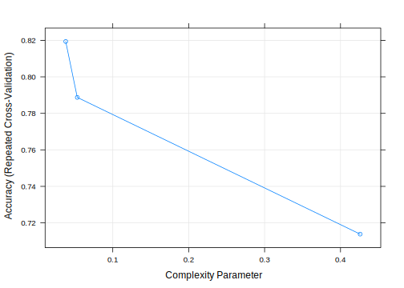
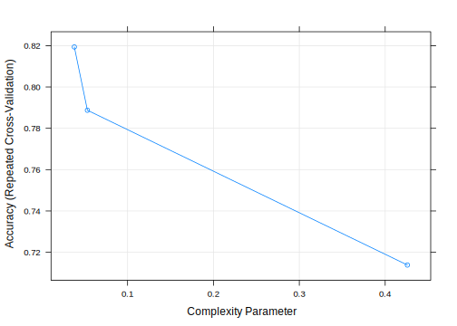

1.2 General Cross Validation Methods
There are two general Cross validation methods can be used to valid a prediction model:
- Single model cross-validation
- Multiple models comparison
1.2.1 Single model Cross Validation
The goal of single model cross-validation is to test the model’s ability to predict new data that was not seen and not used in model construction. So, the problem can be spotted like overfitting or selection bias, in addition it can also give an insight on how the model will generalize to an independent dataset or an unknown dataset.
One round of cross-validation involves partitioning a sample of data into complementary subsets, performing the analysis on one subset (called the training set), and validating the analysis on the other subset (called the validation set). To reduce variability, in most methods multiple rounds of cross-validation are performed using different partitions, and the validation results are combined (e.g. averaged) over the rounds to give an estimate of the model’s predictive performance.
There are two major cross validation methods: exhaustive Cross-validation and non-exhaustive Cross-validation.
Exhaustive cross-validation learn and test on all possible ways to divide the original sample into a training and a validation set. Leave-p-out cross-validation (LpO CV) is an exhaustive cross validation method. It involves using \(p\) data samples as the validation dataset and the remaining data samples as the training dataset. This is repeated over and over until all possible ways to divide the original data sample into a training and a validation dataset \(p\).
Non-exhaustive cross validation, in the contrary, does not compute all the possible ways of splitting the original data sample but still has a certain coverage. \(k\)-fold cross-validation is a typical non-exhaustive cross validation. In \(k\)-fold cross-validation, the original data sample is randomly partitioned into \(k\) equal sized subsamples. Of the k subsamples, a single subsample is retained as the validation dataset for testing the model, and the remaining \(k\) − 1 subsamples are used as training data. The cross-validation process is then repeated \(k\) times, with each of the \(k\) subsamples used exactly once as the validation data. The \(k\) results can then be averaged to produce a single estimation. The advantage of this method over repeated random sub-sampling is that all observations are used for both training and validation, and each observation is used for validation exactly once. 10-fold cross-validation is commonly used in practice.
1.2.2 General Procedure of Cross-validation
The general procedure of use of Cross validation is as follows: 1. Define cross validation folds \(K\) and create training dataset and validation dataset by Shuffle the dataset randomly. 2. Specify parameters for Cross validation. 3. Create model from training dataset 4. Create list of predicted values on validation dataset 5. Check prediction error and prediction accuracy
We will use examples to demonstrate this procedure.
1.2.3 Cross Validation on Decision Tree Models
We have produced 4 decision tree models in Chapter 8. Let us do Cross validation on model2 and model3 since they have identical predictors with the random forest RF_model1 and RF_model2 which we will do Cross validation later.
## Warning: package 'caret' was built under R version 3.6.3## Loading required package: lattice## Warning: package 'lattice' was built under R version 3.6.3## Loading required package: ggplot2## Warning: package 'ggplot2' was built under R version 3.6.3## Warning: package 'rpart.plot' was built under R version 3.6.3#read Re-engineered dataset
RE_data <- read.csv("RE_data.csv", header = TRUE)
#Factorize response variable
RE_data$Survived <- factor(RE_data$Survived)
RE_data$Survived <- factor(RE_data$Survived)
#Separate Train and test data.
train <- RE_data[1:891, ]
test <- RE_data[892:1309, ]
#setup model's train and valid dataset
set.seed(1000)
samp <- sample(nrow(train), 0.8 * nrow(train))
trainData <- train[samp, ]
validData <- train[-samp, ]# set random for reproduction
set.seed(3214)
# specify parameters for cross validation
control <- trainControl(method = "repeatedcv",
number = 10, # number of folds
repeats = 5, # repeat times
search = "grid")Our cross validation settings are: 10 folds, and repeat 5 times, with “Grid” search the optimal parameter. The detailed meaning of each settings refers to http://topepo.github.io/caret/data-splitting.html.
Let us to Cross validation for Tree model2,
set.seed(1010)
#create model from cross validation data
Tree_model2_cv <- train(Survived ~ Sex + Pclass + HasCabinNum + Deck + Fare_pp,
data = trainData,
method = "rpart",
trControl = control)Display details of the cross validation,
#Visualize cross validation tree
rpart.plot(Tree_model2_cv$finalModel, extra=4)
print.train(Tree_model2_cv)## CART
##
## 712 samples
## 5 predictor
## 2 classes: '0', '1'
##
## No pre-processing
## Resampling: Cross-Validated (10 fold, repeated 5 times)
## Summary of sample sizes: 641, 640, 640, 641, 641, 642, ...
## Resampling results across tuning parameters:
##
## cp Accuracy Kappa
## 0.00887199 0.8253404 0.6003541
## 0.03041825 0.7955233 0.5418574
## 0.43726236 0.6908918 0.2281378
##
## Accuracy was used to select the optimal model using the largest value.
## The final value used for the model was cp = 0.00887199.plot.train(Tree_model2_cv)
model_accuracy <- Tree_model2_cv$results$Accuracy[1]
# accuracy is 81.48.

(#fig:tree_model2_CV)Decision Tree CV model2.
let us record the model’s accuracy on trainData, validData, and test dataset. Remember trainData and validData are randomly partitioned from the train dataset.
### Access accuracy on different datasets
#predict on train
predict_train <-predict(Tree_model2_cv, trainData)
conMat <- confusionMatrix(predict_train, trainData$Survived)
conMat$table## Reference
## Prediction 0 1
## 0 431 104
## 1 18 159## Accuracy
## 0.8286517#predict on valid
predict_valid <-predict(Tree_model2_cv, validData)
conMat <- confusionMatrix(predict_valid, validData$Survived)
conMat$table## Reference
## Prediction 0 1
## 0 93 36
## 1 7 43## Accuracy
## 0.7597765#predict on test
predict_test <-predict(Tree_model2_cv, test)
submit <- data.frame(PassengerId = test$PassengerId, Survived = as.factor(predict_test))
write.csv(submit, file = "Tree_model2_CV.CSV", row.names = FALSE)
## test accuracy 75837
# accumulate model's accuracy
Tree_model2_CV_accuracy <- c(model_accuracy, predict_train_accuracy, predict_valid_accuracy, 0.75837)We can see the tree differences from Figure @ref(fig:tree_model2_CV) and Figure ??. We can also see that despite the model tried the best parameters, the prediction accuracy on the test dataset is dropped from 0.76555 (default decision tree) to 0.75837. It shows that the model construction has reached the best since the change of the tree structure does not increase the accuracy. The drop of the accuracy may caused by the reduction of the size of the training dataset. It reflects the second possible cause of the overfitting, that is the size of the training sample. Recall that decision tree model2 was trained on the tran dataset and noe it is trained on the trainData. the later is a random subset of the train dataset and only has 80 percent of the data samples. That is to say, the smaller of the training dataset the more chance of the inaccurate prediction accuracy on the test dataset (overfitting or underfitting).
Let us do cross validation on tree model3,
set.seed(1234)
tree_model3_cv <- train(Survived ~ Sex + Fare_pp + Pclass + Title + Age_group + Group_size + Ticket_class + Embarked,
data = trainData,
method = "rpart",
trControl = control)Visualize model,
#Visualize cross validation tree
rpart.plot(tree_model3_cv$finalModel, extra=4)
print.train(tree_model3_cv)## CART
##
## 712 samples
## 8 predictor
## 2 classes: '0', '1'
##
## No pre-processing
## Resampling: Cross-Validated (10 fold, repeated 5 times)
## Summary of sample sizes: 641, 641, 641, 641, 641, 641, ...
## Resampling results across tuning parameters:
##
## cp Accuracy Kappa
## 0.03802281 0.8209755 0.6124019
## 0.05323194 0.7934831 0.5627884
## 0.42585551 0.6979987 0.2637528
##
## Accuracy was used to select the optimal model using the largest value.
## The final value used for the model was cp = 0.03802281. 

(#fig:tree_model3_CV)Decision Tree CV model3.
Record model’s accuracy,
### Access accuracy on different datasets
#predict on train
predict_train <-predict(tree_model3_cv, trainData)
conMat <- confusionMatrix(predict_train, trainData$Survived)
conMat$table## Reference
## Prediction 0 1
## 0 387 61
## 1 62 202## Accuracy
## 0.8272472#predict on valid
predict_valid <-predict(tree_model3_cv, validData)
conMat <- confusionMatrix(predict_valid, validData$Survived)
conMat$table## Reference
## Prediction 0 1
## 0 90 24
## 1 10 55## Accuracy
## 0.8100559#predict on test
predict_test <-predict(tree_model3_cv, test)
submit <- data.frame(PassengerId = test$PassengerId, Survived = as.factor(predict_test))
write.csv(submit, file = "Tree_model3_CV.CSV", row.names = FALSE)
## test accuracy 0.77751
# accumulate model's accuracy
Tree_model3_CV_accuracy <- c(model_accuracy, predict_train_accuracy, predict_valid_accuracy, 0.77751)
Tree_model3_CV_accuracy## Accuracy Accuracy
## 0.8209755 0.8272472 0.8100559 0.7775100The results shows a consistent prediction accuracy. The accuracy on the test dataset has been increased from 0.77033 (Tree model3) to 0.7775. The point perhaps is that the increase of predictors does improve the accuracy (so far).
Based on the two cross validation we did on the two decision tree models: model2 and model3, we can conclude that the decision tree model default setting are nearly reaches the best setting. This is because after we used 10 folds and repeat 5 times cross validation and Grid search for best parameters, we did not improve much of the models’ accuracy.
Now, Let us try the same cross validation with the two Random forest models constructed in the Chapter 9.
# set seed for reproduction
set.seed(2307)
RF_model1_cv <- train(Survived ~ Sex + Pclass + HasCabinNum + Deck + Fare_pp,
data = trainData,
method = "rf",
trControl = control)
print(RF_model1_cv)## Random Forest
##
## 712 samples
## 5 predictor
## 2 classes: '0', '1'
##
## No pre-processing
## Resampling: Cross-Validated (10 fold, repeated 5 times)
## Summary of sample sizes: 641, 642, 640, 641, 641, 641, ...
## Resampling results across tuning parameters:
##
## mtry Accuracy Kappa
## 2 0.7685740 0.4567166
## 7 0.8387568 0.6378935
## 12 0.8284003 0.6259470
##
## Accuracy was used to select the optimal model using the largest value.
## The final value used for the model was mtry = 7.## mtry Accuracy Kappa AccuracySD KappaSD
## 1 2 0.7685740 0.4567166 0.05952452 0.14714638
## 2 7 0.8387568 0.6378935 0.04129952 0.09534059
## 3 12 0.8284003 0.6259470 0.04530653 0.09853010## [1] 0.8387568We can see that the best model parameters are mtry = 7 and ntree = 500, The trained model’s best accuracy is 83.87%.
Let us verify on validate dataset and make prediction on test dataset.
### Access accuracy on different datasets
#predict on train
predict_train <-predict(RF_model1_cv, trainData)
conMat <- confusionMatrix(predict_train, trainData$Survived)
conMat$table## Reference
## Prediction 0 1
## 0 432 72
## 1 17 191## Accuracy
## 0.875#predict on valid
predict_valid <-predict(RF_model1_cv, validData)
conMat <- confusionMatrix(predict_valid, validData$Survived)
conMat$table## Reference
## Prediction 0 1
## 0 88 34
## 1 12 45## Accuracy
## 0.7430168#predict on test
predict_test <-predict(RF_model1_cv, test)
submit <- data.frame(PassengerId = test$PassengerId, Survived = as.factor(predict_test))
write.csv(submit, file = "RF_model1_CV.CSV", row.names = FALSE)
## test accuracy 74641
# accumulate model's accuracy
RF_model1_cv_accuracy <- c(model_accuracy, predict_train_accuracy, predict_valid_accuracy, 0.74641)
RF_model1_cv_accuracy## Accuracy Accuracy
## 0.8387568 0.8750000 0.7430168 0.7464100The trainData set (randomly selected 80 percent of train dataset ), the random forest parameter (mtry = 7, ntree = 500) and the cross validation settings (fold = 10 and repeats= 5) combined together a model. Its prediction accuracy is pretty bad with 74.6% accuracy on the test dataset. The same predictors using default random forest settings(mtry = 1, ntree = 500) and trained on the train dataset has a prediction accuracy of 0.76555.
Let us try on random forest model2,
# set seed for reproduction
set.seed(2300)
RF_model2_cv <- train(Survived ~ Pclass + Title + Sex + Age_group + Group_size + Ticket_class + Fare_pp + Deck + HasCabinNum + Embarked,
data = trainData,
method = "rf",
trControl = control)
print(RF_model2_cv)## Random Forest
##
## 712 samples
## 10 predictor
## 2 classes: '0', '1'
##
## No pre-processing
## Resampling: Cross-Validated (10 fold, repeated 5 times)
## Summary of sample sizes: 641, 640, 642, 641, 640, 641, ...
## Resampling results across tuning parameters:
##
## mtry Accuracy Kappa
## 2 0.8159326 0.5841530
## 21 0.8398931 0.6512953
## 41 0.8320097 0.6343455
##
## Accuracy was used to select the optimal model using the largest value.
## The final value used for the model was mtry = 21.## mtry Accuracy Kappa AccuracySD KappaSD
## 1 2 0.8159326 0.5841530 0.03485475 0.08201532
## 2 21 0.8398931 0.6512953 0.03669218 0.08092936
## 3 41 0.8320097 0.6343455 0.03890207 0.08559051## [1] 0.8398931Let us calculate model’s accuracy,
### Access accuracy on different datasets
#predict on train
predict_train <-predict(RF_model2_cv, trainData)
conMat <- confusionMatrix(predict_train, trainData$Survived)
conMat$table## Reference
## Prediction 0 1
## 0 441 16
## 1 8 247## Accuracy
## 0.9662921#predict on valid
predict_valid <-predict(RF_model2_cv, validData)
conMat <- confusionMatrix(predict_valid, validData$Survived)
conMat$table## Reference
## Prediction 0 1
## 0 87 28
## 1 13 51## Accuracy
## 0.7709497#predict on test
predict_test <-predict(RF_model2_cv, test)
submit <- data.frame(PassengerId = test$PassengerId, Survived = as.factor(predict_test))
write.csv(submit, file = "RF_model2_CV.CSV", row.names = FALSE)
## test accuracy 0.75119
# accumulate model's accuracy
RF_model2_cv_accuracy <- c(model_accuracy, predict_train_accuracy, predict_valid_accuracy, 0.75119)
RF_model2_cv_accuracy## Accuracy Accuracy
## 0.8398931 0.9662921 0.7709497 0.7511900We have used 10 folds and repeating 5 times cross validation with 80% of the train dataset to build and validate 4 models we have produced, two from decision tree and two from random forest. The accuracy with different datasets have been collected. let us put them into one table and plot them so we can make a comparison.
## Warning: package 'tidyr' was built under R version 3.6.3## Accuracy Accuracy
## 0.8253404 0.8286517 0.7597765 0.7583700## Accuracy Accuracy
## 0.8209755 0.8272472 0.8100559 0.7775100## Accuracy Accuracy
## 0.8387568 0.8750000 0.7430168 0.7464100## Accuracy Accuracy
## 0.8398931 0.9662921 0.7709497 0.7511900Pre <- c("Sex, Pclass, HasCabinNum, Deck, Fare_pp", "Sex, Fare_pp, Pclass, Title, Age_group, Group_size, Ticket_class, Embarked", "Sex, Pclass, HasCabinNum, Deck, Fare_pp", "Sex, Fare_pp, Pclass, Title, Age_group, Group_size, Ticket_class, Embarked")
Learn <- c(Tree_model2_CV_accuracy[1]*100, Tree_model3_CV_accuracy[1]*100, RF_model1_cv_accuracy[1]*100, RF_model2_cv_accuracy[1]*100)
Learn##
## 82.53404 82.09755 83.87568 83.98931Train <- c(Tree_model2_CV_accuracy[2]*100, Tree_model3_CV_accuracy[2]*100, RF_model1_cv_accuracy[2]*100, RF_model2_cv_accuracy[2]*100)
Train## Accuracy Accuracy Accuracy Accuracy
## 82.86517 82.72472 87.50000 96.62921Valid <- c(Tree_model2_CV_accuracy[3]*100, Tree_model3_CV_accuracy[3]*100, RF_model1_cv_accuracy[3]*100, RF_model2_cv_accuracy[3]*100)
Valid## Accuracy Accuracy Accuracy Accuracy
## 75.97765 81.00559 74.30168 77.09497Test <- c(Tree_model2_CV_accuracy[4]*100, Tree_model3_CV_accuracy[4]*100, RF_model1_cv_accuracy[4]*100, RF_model2_cv_accuracy[4]*100)
Test##
## 75.837 77.751 74.641 75.119df1 <- data.frame(Model, Pre, Learn, Train, Valid, Test)
df2 <- data.frame(Model, Learn, Train, Valid, Test)
knitr::kable(df1, longtable = TRUE, booktabs = TRUE, digits = 2, col.names =c("Models", "Predictors", "Accuracy on Learn", "Accuracy on Train", "Accuracy on Valid", "Accuracy on Test"),
caption = 'The Comparision among 4 CV models'
)| Models | Predictors | Accuracy on Learn | Accuracy on Train | Accuracy on Valid | Accuracy on Test |
|---|---|---|---|---|---|
| Tree_M2 | Sex, Pclass, HasCabinNum, Deck, Fare_pp | 82.53 | 82.87 | 75.98 | 75.84 |
| Tree_M3 | Sex, Fare_pp, Pclass, Title, Age_group, Group_size, Ticket_class, Embarked | 82.10 | 82.72 | 81.01 | 77.75 |
| RF_model1 | Sex, Pclass, HasCabinNum, Deck, Fare_pp | 83.88 | 87.50 | 74.30 | 74.64 |
| RF_model2 | Sex, Fare_pp, Pclass, Title, Age_group, Group_size, Ticket_class, Embarked | 83.99 | 96.63 | 77.09 | 75.12 |
df.long <- gather(df2, Dataset, Accuracy, -Model, factor_key =TRUE)
ggplot(data = df.long, aes(x = Model, y = Accuracy, fill = Dataset)) +
geom_col(position = position_dodge()) Figure 1.2: Cross valid models’ accuracy on model learning, Traindata dataset. Validdata and Test dataset.
From the Cross validation results we can conclude that:
- Both decision tree and random forest models default settings are good settings. Despite dynamic search for best parameters, the change of the parameter setting do not affect the prediction accuracy much. So both default settings for the prediction model are acceptable.
- Change of training dataset for model building from train dataset to its subset trianData, in 10 fold 5 repeat cross validation settings, does not change the order of models’ performance in terms of decision tree and random forest. It however, when considering a single model, does suggest that the number of samples used for learn a model has an impact on model’s prediction results.
- It is clearly shows that the random forest models have an overfitting.
- It does not provide a conclusive result that decision tree is better than random forest or vice verse.
A general rule seems that, the more features you have, and the more samples you used in the training, the more likely your model will suffer from overfitting and vice verse.
Therefore to choose a model for real prediction, we should choose the model that has the smallest accuracy decrease from the model’s training to verification by the cross validation.